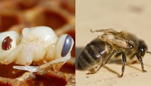
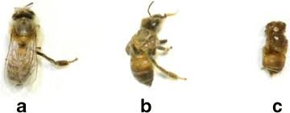

Deformed Wing Virus (DWV)
What is Deformed Wing Virus?
Deformed Wing Virus (DWV) is a viral pathogen that affects honeybees. It is transmitted primarily by the Varroa destructor mite, a parasitic mite that feeds on the bodily fluids of honeybees. The virus gets its name from one of its most visible symptoms: deformed, crumpled wings in adult bees.
Effects of DWV
DWV can have severe consequences for honeybee colonies. Infected bees often have shortened abdomens and deformed wings, which prevent them from flying. This leads to a reduced ability to forage for food and perform other essential tasks. As a result, the colony's overall health and productivity decline, and in severe cases, the colony can collapse.
Identification of DWV
Identifying DWV involves observing physical symptoms in the bees. Look for bees with deformed, crumpled wings and shortened abdomens. Laboratory tests can also confirm the presence of the virus. Monitoring Varroa mite levels in the hive is crucial, as higher mite counts increase the likelihood of DWV transmission.
.jpeg)
Cure and Management of DWV
Currently, there is no cure for DWV. Management focuses on controlling Varroa mite populations to reduce the spread of the virus. Beekeepers can use chemical treatments, mechanical methods, and integrated pest management strategies to keep mite levels low. Regular monitoring and maintaining hive health through good beekeeping practices are essential for preventing DWV outbreaks.
.jpeg)